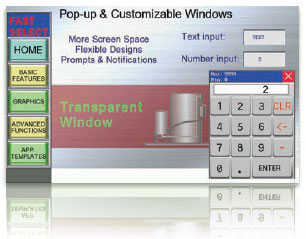

The robust TFT, color touch LCD gives excellent visibility and features long-life (50,000 hours) LED backlighting. Screen sizes range from 3.5 to 10 inches.
• LED backlighted TFT LCD
• Wide viewing angle
• More than 65,000 display colors
• Stores up to 120 MBs of screen data
Building Automation
Industrial Automation
Power Automation & Safety


Bangladesh Distributor
NB Series
Programmable Terminals
Quality color display with LED backlighting. Complete HMI family. Comprehensive features.
about this Product Family
Related Contents
- Automation Systems
- Programmable Terminals
- Features
- Lineup
- Specifications
- Dimensions
- Catalog
last update: March 10, 2014
with comprehensive features
Best-in-class display
Smart design
When developing the NB series, we considered every aspect of the design to give you maximum flexibility. A typical example is the portrait or landscape display mode.
• Portrait or landscape display mode
• Connection to Omron and non-Omron devices, e.g. PLCs/inverters
• Serial, USB or Ethernet connectivity
• PictBridge printer connection
Saves you time
The NB series has many useful features that will make it easy to create and maintain your projects, such as the USB memory stick support.
• USB memory stick support
• Animations and easy-to-use functions
• Multi-language support and tool
• On/off-line simulation
Turn your idea into an application… exactly how you want it!
The NB series gives you all the features and functionality to easily create intuitive operator screens really quickly. Features such as window handling give you many screen-creation possibilities, while texts can be defined in up to 32 languages. Furthermore, off-line simulation enables you to quickly test your project.
Flexible window handling

Your scope to create screens for your project using the familiar window concept was never greater than with the NB series. Three standard windows maximize your creative freedom:
1) Basic for general or pop-up screens,
2) Common for fixed or template screens and
3) Fast Selection for menu screens.
Besides the standard window, you can also show ‘window-inwindow’ using the indirect window component. And you can manage pop-up windows using the direct window component. Furthermore, the NB series also supports bottom windows and transparency for pop-up windows.
Extensive language support
Currently supporting 32 languages, you will find it easy to manage texts with the NB series. Thanks to the Text Library function, you can store the texts used many times in a project. Similarly, you can also store the text for a component supporting multiple states (ON/OFF), using a text for each state. And you can do this together with the font setting for each language.
Easy animation

The NB series gives you many possibilities to create animations easily and quickly. Moving components can be created easily and in many ways. For example, you may want to show a different status with text and graphics, or showing free or trajectory movement while changing the displayed graphic. All of this can be done by simply configuring the status, X/Y coordinates and corresponding address.
Powerful Macros
Thanks to its powerful macros, the NB series also allows you to do even more, such as perform calculations and comparisons or iterations, and mathematical functions. It also enables you to draw graphics and patterns on the NB screen, as well as writing / reading a value from or to the local memory and the memory of a connected device.
The logical choice for your machine
The feature-rich NB series has everything you will need for creating applications for a wide range machines and in many industries, for example, packaging, food, plastics and textiles. From a simple lid placing or loading/unloading machine right up to an in-line filling or sealing /labeling packaging machine. And last but not least, Omron's latest NB-Designer software can be downloaded free of charge and at any time from our website.
Always informed about alarms
Event monitoring (alarming) is both flexible and easy to use. Not only do you have the possibility to enter bit and word alarms for on/off or on-condition triggering, there is also the possibility to use different fonts and color to indicate varying degrees of status and priorities. Specific alarms are indicated with an audible buzzer sound, as well as by an accompanying text message, and you can even create pop-up alarms for situations where immediate action has to be taken.
Easy data presentation
Graphical representation of real-time and historical data is easy with the NB series. As well as display of time sampling and trending data, you have the option to save sampling data (max. 16 consecutive words) of basic real-time trending data. And you can plot using x/y coordinates, in which case sampling can be done via single or multiple points and with historical data. Furthermore, data can be presented in a variety of ways, such as sampling points using x and y components.
Multiple security options
Protecting your developed project with a password using the NB series is both a simple and secure matter. Among the comprehensive security options is the possibility to define up to 16 minimum security levels on screens, buttons and inputs, and you can set up to 32 specific permission controls for each operator. There is also a register condition (bit/word) control for a check of actual condition against a predefined value, and a standard operator confirmation check to confirm that critical actions have been performed by the operator.
Direct connection with safety
The NB series can be directly connected to Omron’s G9SP Safety Controller via RS-232C serial communications. Direct connection allows you to easily monitor details of errors that occur in the G9SP series and operation status, which contributes to reduce machine downtime. Now you do not need to create the program that was previously required for data exchange between the G9SP and HMI through PLC.
The perfect partner for CP1
With its large range of screen sizes, ample specifications, rich functionality and proven Omron high quality, the new NB series has everything you need in a compact HMI to accompany Omron’s popular CP1 Compact Machine Controller range. The CP1 offers increasing degrees of sophistication to perfectly match your specific automation requirement and connection to the NB series is possible via Serial or Ethernet. Similarly, data transfer of recipes between HMI and PLC (with data back-up to external memory if required) is easy and the recipe screen format is freely selectable, or can be a standard table if preferred.
last update: March 10, 2014